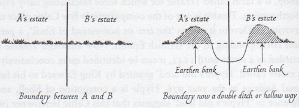

n. A sunken footpath or road; a path that is enclosed by high embankments on both sides.
Notes:
There are two main methods that create holloways: By years (decades, centuries) of constant foot traffic that wears down the path (a process usually accelerated somewhat by water erosion); or by digging out a path between two properties and piling up the dirt on either side.
Examples:
Down in the depths of the holloway, you could see neither metalled roads nor telegraph poles, nor even the most distant glimpses of the outsized golf balls of the early warning radar up on Fylingdales.
—William Dalrymple, “Holloway by Robert Macfarlane, Stanley Donwood, Dan Richards – review,” The Guardian, July 19, 2013
Nevertheless, the passage of men and animals over thousands of years has created a very clear series of tracks and holloways (entrenched roads) along this route.
—Paul Hindle, Medieval Roads and Tracks, Shire Archaeology, July 10, 2008
Hollow ways which have survived are our only ancient monuments still in use thousands of years after their creation. While exploring them we tread on the same paths as our remote ancestors, forming a continuous link with prehistoric times.
—Heather Hurley, The Old Roads of South Herefordshire, Finleaf Editions, September 30, 2007
Occasionally, a place or field name may help in assessing the date of a holloway — or at least give an idea of when it was in use and thus indicate that it must be older than that date. Perhaps the best-known name of this type is Holloway in London, a name first recorded in the fifteenth century. In Derbyshire there is, to the south of Matlock, a small hamlet called Holloway, first recorded in the thirteenth century, and there are several other similar names around the country. The many ‘Dark Lanes’ could be related to holloways as well.
—Richard Morriss, Roads: Archaeology and Architecture, Tempus, 2005
The ‘hollow way’ was made by each landowner digging out a ditch and throwing up the earth into a continuous bank on his own side. So we get a double ditch which forms in fact a track several feet wide and sunk several feet below the level of the fields on either side, thus:

—W. G. Hoskins, The Making of the English Landscape, Penguin Books, 1955